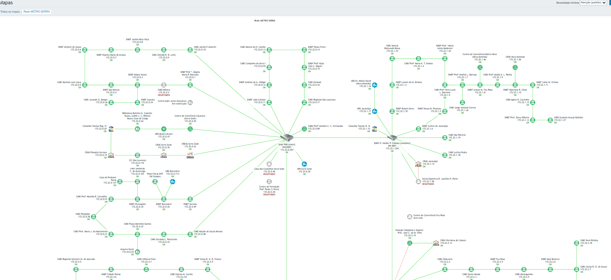
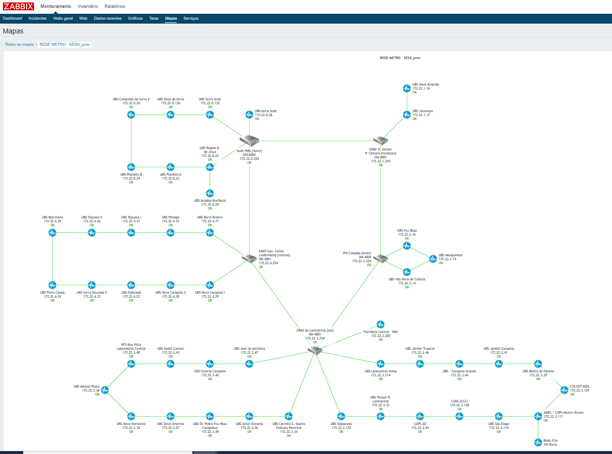

Projetos em Destaque
Aqui eu compartilho alguns projetos que tenho conduzido na Secretaria de Saúde de Serra-ES, sempre com foco em disponibilidade, segurança e melhoria do atendimento à população.
2021–2026 - Cinco Anos à Frente da Gerência de TI da Saúde de Serra-ES
Entre agosto de 2021 e agosto de 2026, estive à frente da Gerência de Tecnologia da Informação da Secretaria Municipal de Saúde de Serra-ES (GTI/SESA), responsável pela infraestrutura tecnológica de mais de 40 unidades de saúde.
Destaque: Referência Nacional em e-SUS
Sob esta gestão, a Saúde de Serra-ES tornou-se referência nacional no uso do e-SUS APS/PEC, figurando entre os 15 municípios-piloto do país, em um universo de mais de 4.200 municípios que utilizam a plataforma no Brasil — reconhecimento direto da maturidade técnica e da estabilidade da infraestrutura construída ao longo do período.
Principais Entregas
- Modernização da rede de dados da Saúde, com anel de fibra próprio e link dedicado evoluindo de 200 Mb compartilhados para 1 Gb exclusivo (projeto detalhado abaixo).
- Renovação e ampliação do parque de informática (computadores, impressoras, tablets e periféricos) para acompanhar a expansão das unidades de saúde.
- Gestão de contratos de infraestrutura crítica, com continuidade assegurada por processos já formalizados antes da transição.
- Fila de chamados técnicos zerada na entrega da gestão, garantindo transição sem descontinuidade tecnológica.
Legado e Continuidade
Encerro o ciclo com projetos estruturantes já encaminhados, entre eles o cabeamento estruturado, o link redundante para maior resiliência e a expansão de Wi-Fi para novas unidades — apoiando ativamente a transição para a nova gestão.
2025 - Modernização da Rede de Dados da Saúde de Serra-ES
Um dos projetos que lideramos foi a modernização da conectividade das unidades de saúde, desvinculando a infraestrutura de fibra das escolas e ampliando significativamente a capacidade de internet dedicada à saúde.
Contexto
Antes da nossa gestão, toda a prefeitura compartilhava um único link de internet de aproximadamente 200 Mb. Além disso, muitas unidades de saúde dependiam fisicamente da fibra das escolas: quando a escola tinha problema de conectividade, a unidade de saúde também ficava indisponível.
Desafio
- Eliminar a dependência da fibra das escolas.
- Aumentar o link de internet dedicado exclusivamente para a saúde.
- Reduzir indisponibilidades e abrir caminho para serviços mais críticos e em nuvem.
Solução Implementada
Iniciamos estudos, mapeamos toda a topologia de rede e escrevemos um projeto técnico para reestruturar a infraestrutura. Entre as principais ações:
- Separação física e lógica da rede da saúde em relação à rede das escolas, com novo desenho de fibra e rotas dedicadas.
- Evolução do link de internet exclusivo para a saúde: de 200 Mb compartilhados para 500 Mb dedicados e, posteriormente, para 1 Gb dedicado.
- Monitoria centralizada via Zabbix, com mapas de rede mostrando o status de cada unidade e facilitando o troubleshooting.
Infraestrutura de Rede: Antiga vs. Atual


Resultados
- Redução drástica das interrupções de link nas unidades de saúde, especialmente nas que antes dependiam das escolas.
- Capacidade de internet ampliada para 1 Gb dedicado, viabilizando sistemas mais pesados, prontuário eletrônico, telemedicina e integrações em nuvem.
- Maior visibilidade da rede, com painéis de monitoramento permitindo identificar rapidamente incidentes e agir de forma proativa.
Próximos Passos
O próximo passo é implementar um link redundante para a rede da saúde, garantindo ainda mais disponibilidade e resiliência para os sistemas críticos utilizados diariamente por profissionais e cidadãos.